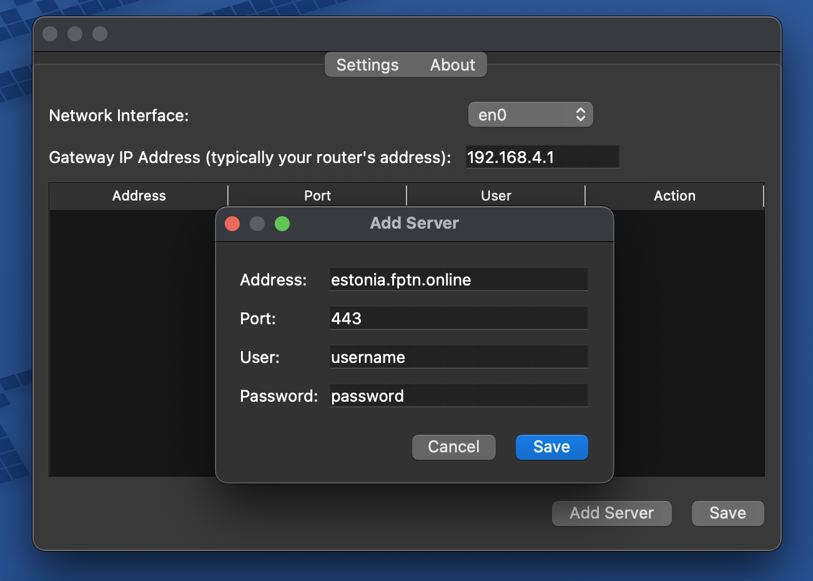
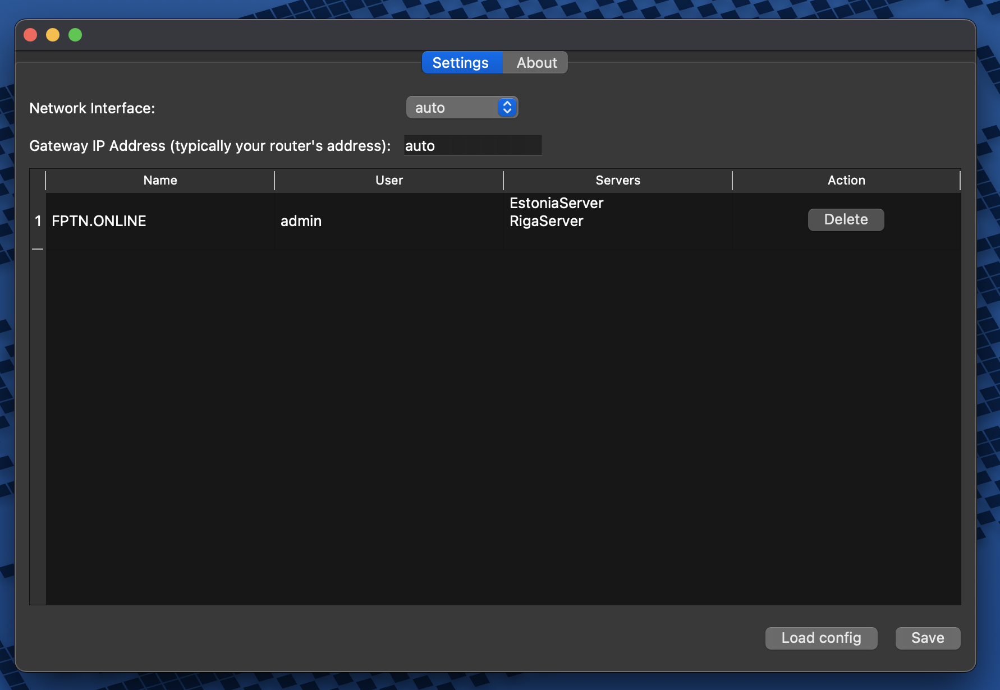
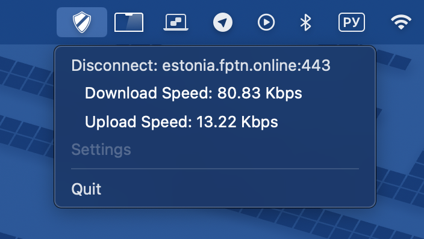

FPTN Project
FPTN is a VPN service specifically designed to bypass censorship. Initially launched as a research project, FPTN actively helps people gain access to a free internet.
Download the client and use the Telegram bot to gain access. It’s free.
FPTN works through the HTTPS protocol, effectively masking traffic and allowing you to bypass censorship restrictions. The entire project source code, including the Telegram bot code, is available on Github.
FPTN Project
FPTN — это VPN-сервис, специально разработанный для обхода цензуры. Изначально запущенный как исследовательский проект, FPTN активно помогает людям получать доступ к свободному интернету.
Скачайте клиент и воспользуйтесь телеграм ботом для получения доступа. Это бесплатно.
FPTN работает через протокол HTTPS, эффективно маскируя трафик и позволяя обходить ограничения цензуры. Весь исходный код проекта, включая код телеграм-бота, доступен на Github
Download FPTN
Скачать FPTN
Download the macOS client and follow the installation guide. При установке клиента на MacOS вам может понадобиться более детальная инструкция. Это же Mac :)
Download Linux client Скачать Linux клиент
Commandline tools Серверные инструменты
Download Windows client Скачать Windows клиент
Клиент FPTN — это простое приложение с интерфейсом, расположенным в системном трее.
После запуска клиента найдите значок клиента VPN в системном трее.
Просто щелкните значок, чтобы открыть контекстное меню.

Регистрация очень проста!
Воспользуйтесь нашим Telegram-ботом @fptn_bot,
чтобы получить файл настроек для доступа. В боте нажмите "Get access file", чтобы скачать файл настроек.
Затем откройте настройки FPTN-клиента (щелкните на иконку в трее), чтобы добавить новое подключение. Нажмите кнопку "Load config" и выберите
скачанный файл.

После этого сохраните настройки. 
Удобство использования: 
А еще, ты можешь легко превратить свою RaspberryPi/OrangePi в WiFi-точку доступа и установить на неё FPTN-клиент.
В этом случае все устройства, подключённые к WiFi, получат доступ к интернету, обходя любые ограничения.
Читай тут

FPTN Client is a straightforward application with an interface located in the system tray.
Once the client is running, find the VPN client icon in the system tray.
Simply click on the icon to open the context menu.
Registration is very simple!
Use our Telegram bot @fptn_bot to get the configuration file for access. In the bot, click "Get access file" to download the configuration file.
Then open the FPTN client settings (click the icon in the system tray) to add a new connection. Click the "Load config" button and select
the downloaded file.
After that, save the settings.
Ease of use:
You can also easily turn your Raspberry Pi or Orange Pi into a WiFi access point and install the FPTN client on it.
In this case, all devices connected to the WiFi will be able to access the internet, bypassing any restrictions.
Read more here